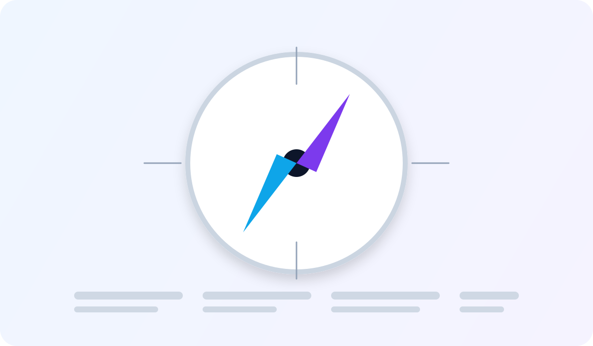
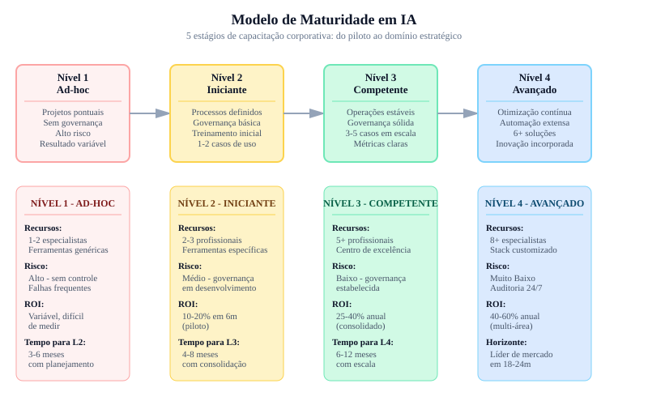

Resultado contínuo
Ganhos sustentados em ciclos trimestrais.
Conclusão
Você chegou ao final desta jornada com base conceitual, visão estratégica e ferramentas práticas para implementar IA na administração de forma responsável e orientada a resultado.

Ganhos sustentados em ciclos trimestrais.
Operação, governança e escala alinhadas.
Sem cadência, a iniciativa perde tração.
Ferramentas especializadas por área administrativa, com integração direta a sistemas internos.
Modelos híbridos serão padrão: IA executa volume, pessoas validam decisões sensíveis.
Empresas com política robusta de IA terão vantagem competitiva e reputacional.
A latência entre indicador e ação tende a cair drasticamente com IA integrada ao fluxo operacional.
Sistema didático da conclusão
Resumo
Conclusão forte não termina em diagnóstico; ela define ciclo recorrente de melhoria, governança e expansão por prioridade.
Exemplo real
Organizações que evoluem por ondas trimestrais mantêm ganhos operacionais e evitam perda de foco após o piloto inicial.
Prompt pronto
Use os prompts de maturidade para converter aprendizados do curso em plano anual com metas e accountability.
Atenção
Sem dono executivo e cadência de revisão, a empresa volta ao modo manual e perde os ganhos obtidos.
| Fase | Período | Foco | Resultado esperado |
|---|---|---|---|
| Fase 1 | 0 a 90 dias | Piloto em processo crítico | Primeiros ganhos medidos e equipe treinada |
| Fase 2 | 4 a 6 meses | Padronização e governança | Política de IA, revisão humana e painel de KPIs |
| Fase 3 | 7 a 12 meses | Escala para múltiplas áreas | Eficiência operacional consolidada e inovação contínua |

Modelo pratico para sustentar ganhos apos o encerramento do curso.
Padronize fluxos com runbooks, checklist de excecao e responsavel por turno.
Audite entradas semanalmente e mantenha trilha de ajustes para evitar degradacao do desempenho.
Defina rotina mensal de treinamento de prompts, analise critica e governanca aplicada.
Priorize novos casos por impacto economico, risco controlado e velocidade de implantacao.
IA não é apenas tecnologia. É um novo modelo de gestão que combina dados, processo e liderança. Organizações que começarem agora, com método e governança, terão vantagem sustentável em produtividade, qualidade e tomada de decisão.
Etapa final para consolidar aprendizagem e formalizar o plano de continuidade.
| Etapa final | Objetivo | Horas | Resultado esperado |
|---|---|---|---|
| Apresentação do capstone | Defender o plano de IA para a organização | 1h | Aprovação executiva do projeto |
| Plano de continuidade | Definir próximas metas trimestrais e governança | 1h | Roadmap validado para 12 meses |
| Total da etapa | Conclusão formal | 2h | Curso finalizado |
Prompt final para expansão de IA
Atue como consultor sênior de transformação digital. Elabore um plano anual de expansão de IA para a empresa [nome], contemplando: metas trimestrais, áreas prioritárias, orçamento estimado, indicadores de desempenho, governança e capacitação da equipe.
Aplicacao pratica para transformar teoria de Conclusao em ganho operacional mensuravel.
Mapeie o fluxo atual de roadmap de maturidade anual e identifique gargalos de tempo, custo e retrabalho.
Evidencia: mapa AS-IS com 3 gargalos priorizados.
Desenhe um piloto de 2 semanas para continuidade estrategica de IA, com escopo controlado e checkpoints diarios.
Evidencia: plano de execucao com dono, prazo e criterio de parada.
Defina baseline e metas para evolucao de maturidade organizacional, comparando antes vs depois com o mesmo periodo.
Evidencia: painel simples com 3 KPIs e tendencia semanal.
Implemente regras de revisao humana, classificacao de dados e trilha de auditoria das decisoes.
Evidencia: checklist de risco com responsaveis e frequencia de revisao.
Planeje extensao para um segundo processo mantendo qualidade, custo sob controle e aprendizagem da equipe.
Evidencia: roadmap 30-60-90 dias com marco de escala.
Prompts curados para acelerar analise, decisao e implantacao com foco em Conclusao.
Prompt 1: Diagnostico executivo
Atue como consultor de continuidade estrategica de IA. Faça um diagnostico rapido do processo [roadmap de maturidade anual] com 5 gargalos, impacto estimado e prioridade de ataque.
Prompt 2: Plano 30-60-90
Monte um plano 30-60-90 dias para implementar IA em [roadmap de maturidade anual] incluindo objetivos, entregas por fase, donos e riscos.
Prompt 3: KPIs e baseline
Defina um modelo de medicao para [evolucao de maturidade organizacional] com baseline, meta trimestral, formula e frequencia de acompanhamento.
Prompt 4: Governanca minima
Crie uma politica minima de uso de IA para este contexto com regras de dados, revisao humana, aprovacao e auditoria.
Prompt 5: Escala com controle
Proponha como escalar o piloto para outra area sem perder qualidade, informando criterios de readiness e plano de capacitacao.
Use estes prompts para sustentar a transformação com IA além dos 90 dias iniciais e planejar evolução anual.
Prompt: Modelo de Maturidade em IA (de inicial para operacional para otimizado)
Estruture um modelo de maturidade IA para empresa evoluir ano a ano: NÍVEL 1 - INICIAL (Meses 1-3): - Característica: IA ad hoc, sem processo formal - Ganho: Ganho rápido em 1-2 processos - Risco: Alta variabilidade, sem governance - Transição para L2 quando: [qual critério?] NÍVEL 2 - OPERACIONAL (Meses 4-6): - Característica: IA em múltiplas áreas com governança básica - Ganho: Expansão de cobertura, adoção maior - Risco: Complexidade de integração - Transição para L3 quando: [qual critério?] NÍVEL 3 - OTIMIZADO (Meses 7-12): - Característica: IA como parte da infraestrutura, decision-making com IA - Ganho: ROI máximo, cultura IA consolidada - Risco: Obsolescência rápida de modelos - Transição para L4 quando: [qual critério?] NÍVEL 4+ - INOVATIVO (Ano 2+): - Característica: IA customizada, modelos próprios, advantage competitivo - Ganho: Diferenciação de mercado - Investimento: R$ maior, equipe especializada MEU CAMINHO ESPERADO: - Hoje estou em: [Nível X] - Devo chegar em 12 meses: [Nível Y] - Métrica para cada nível: [definir]
Prompt: Roadmap 12 meses pós-90dias: evolução de maturidade com investimento
Após sucesso dos 90 dias, estruture roadmap para ano completo: MESES 4-6 (Expansão Q2): - Novas áreas de IA a explorar: [3-4 focos] - Centro de Excelência: [estrutura, orçamento] - Investimento: R$ [X] - Ganho acumulado esperado: R$ [Y] MESES 7-9 (Consolidação Q3): - Sistemas integrados: [qual arquitetura?] - Treinamento de equipe: [qual formato?] - Políticas/governança: [o que documentar?] - Investimento: R$ [X] - Ganho acumulado esperado: R$ [Y] MESES 10-12 (Otimização Q4): - Modelos customizados: [qual diferencial?] - ROI consolidado: [atingiu target?] - Plano para ano 2: [qual expansão?] - Investimento: R$ [X] - Ganho acumulado esperado: R$ [Y] RESUMO ANUAL: - Investimento total anual: R$ [X] - Ganho total anual: R$ [Y] - ROI anual: [%] - Pessoas treinadas: [X] - Aplicações de IA em produção: [X] - Cultura IA madura?: [sim/parcial/não]
Prompt: Comunicação de resultados e winning hearts & minds
Para sustentar apoio a IA na empresa, comunique resultados de forma convincente: PARA LIDERANÇA EXECUTIVA: - ROI em R$ e % - Payback timeline - Comparação vs concorrência - Recomendação: expandir? Orçamento adicional? PARA EQUIPES DE OPERAÇÃO: - Antes vs depois (mostrando ganho real) - Histórias de sucesso (nomes, impacto pessoal) - Oportunidades futuras (como IA vai mudar seu trabalho?) - Treinamento disponível (como aprender mais?) PARA BOARD/INVESTIDORES: - Maturidade de IA vs concorrentes - Risco de não investir em IA - Roadmap de 3 anos com milestones - Diferencial competitivo gerado CANAIS & FREQUÊNCIA: - Newsletter mensal: [tópico] - Town hall trimestral: [formato] - Centro de Excelência site: [conteúdo] - Caso de estudo publicado: [plataforma?] MÉTRICA DE SUCESSO: - Engagement: [% lê, comenta, participa] - Cultivo: [% querendo usar IA em sua área] - Reputação: [IA vista como vantagem competitiva?]